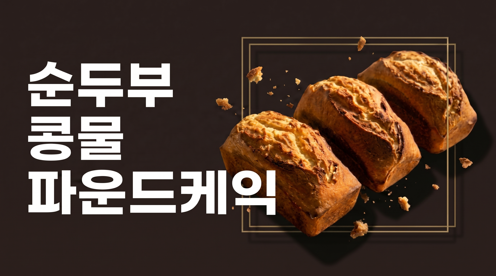
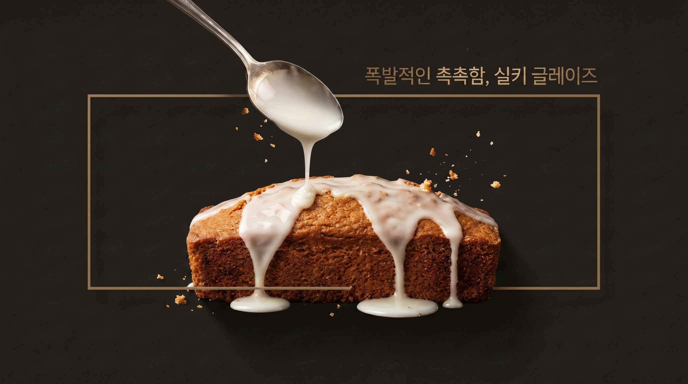
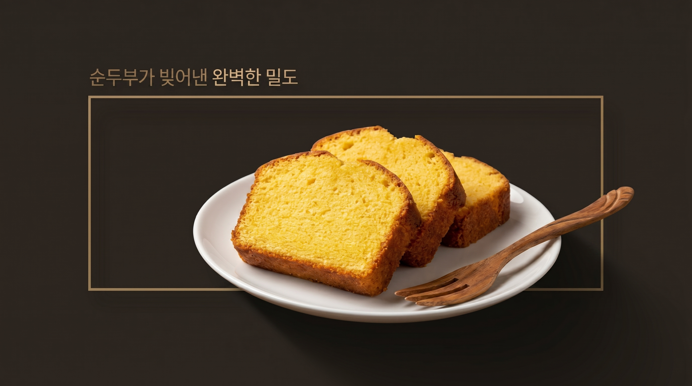

Step 01.
순두부와 콩물의 만남
간이 되지 않은 진하고 고소한 국산 콩물과 수분을 짠 순두부를 준비합니다.
이 두 가지 콩 원재료가 만나 버터를 줄이고도 깊은 고소함과 묵직한 촉촉함을 구현합니다.

Step 02.
믹서기로 완성하는 유화
믹서기에 실온 버터와 설탕을 넣고 간 뒤, 순두부, 실온 달걀, 콩물을 순서대로 넣어 갈아줍니다.
순두부가 천연 유화제 역할을 하여 달걀과 수분이 분리되지 않고 매끄럽게 유화됩니다.

Step 03.
골든 슬릿 베이킹과 콩물 주입
170℃ 오븐에서 굽다가 10분쯤 윗면에 칼집을 내어 파운드 봉우리를 만듭니다.
굽자마자 뜨거운 윗면에 구멍을 뚫고 콩물을 끼얹어 속까지 고소함이 스며들게 숙성시킵니다.